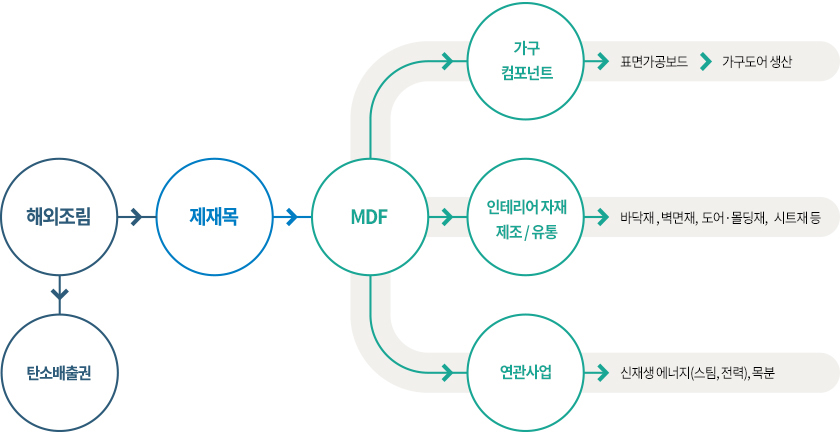

    <div class="bl_business">
        <div class="bl_business_inner">

            <div class="bl_business_box">
            
                <h3 class="bl_business_ttl">MDF(Medium Density Fiberboard)</h3>
                
                <p class="bl_business_txt">가구소판 및 건축내장재로 사용되며, 국내 최초 Super-E0 개발, 포름알데히드 방출량을 최소화함으로써 최고의 품질과 서비스를 제공합니다.</p>

                Products
                색상에 의한 구분	HI-Q, GREEN
                밀도에 의한 구분	STANDARD, LIGHT, S-LIGHT, 인테리어보드
                LPM(Low Pressure Melamine)
                다양한 디자인이 인쇄된 무늬지를 MDF 표면에 고온 압착한 제품으로, 가구와 인테리어 마감재로까지 기능을 확장한 제품입니다.

                PET 가공보드(PET Board)
                인체에 무해한 PET시트를 친환경 공법으로 MDF 표면에 접착한 보드로서, 고급 주방가구 및 붙박이장 도어에 주로 사용됩니다.

                국내 최초 ONE STOP SYSTEM
                전용 보드부터 PET 접착까지 원스탑으로 제공하여 최고의 고객만족 서비스를 제공합니다.

                

                Features
                평활도 아이콘평활도 우수접착성 아이콘접착성 우수국산소나무 아이콘국산소나무
                Products
                하이 그로시 (Hi Glossy), 슈퍼매트 (Super Matt), 스테인리스스틸 (Stainless Steel), 미러글라스 (Mirror Glass)
                가구도어(Furniture Door)
                표면 가공된 보드를 재단, 엣지마감, 보링의 공정을 거쳐 만들어진 가구도어 완제품입니다.

            </div>
            <!-- /.bl_company_box -->
        </div>
        <!-- /.bl_company_inner -->
    </div>
    <!-- /.bl_company -->